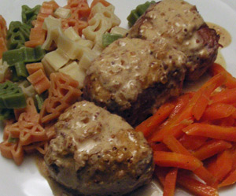

Schweinsfilet an zarter Senfsauce
5 von 6Backofen auf 70 Grad vorheizen. Das Schweinsfilet (ca. 800 g) mit kaltem Wasser abspülen und danach
trocken tupfen. In Medaillons schneiden. Fleisch mit Salz und Pfeffer würzen. Das Olivenöl in der Bratpfanne erhitzen und die Medaillons
beidseitig scharf anbraten. Das Fleisch aus der Pfanne nehmen und im auf 70 Grad vorgeheizten Backofen warm stellen. Die feingehackte Zwiebel in derselben Bratpfanne glasig dünsten. Mit Weisswein und der Rindsbouillon ablöschen. Die Flüssigkeit auf einen Drittel einkochen. Die Crème fraîche in die Sauce geben, kurz aufkochen und umrühren. Mit Senf, Salz und Pfeffer abschmecken.
